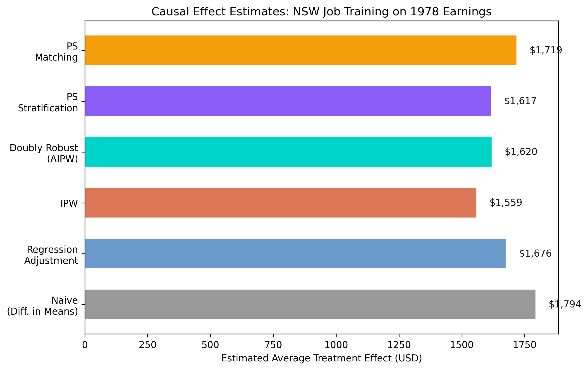
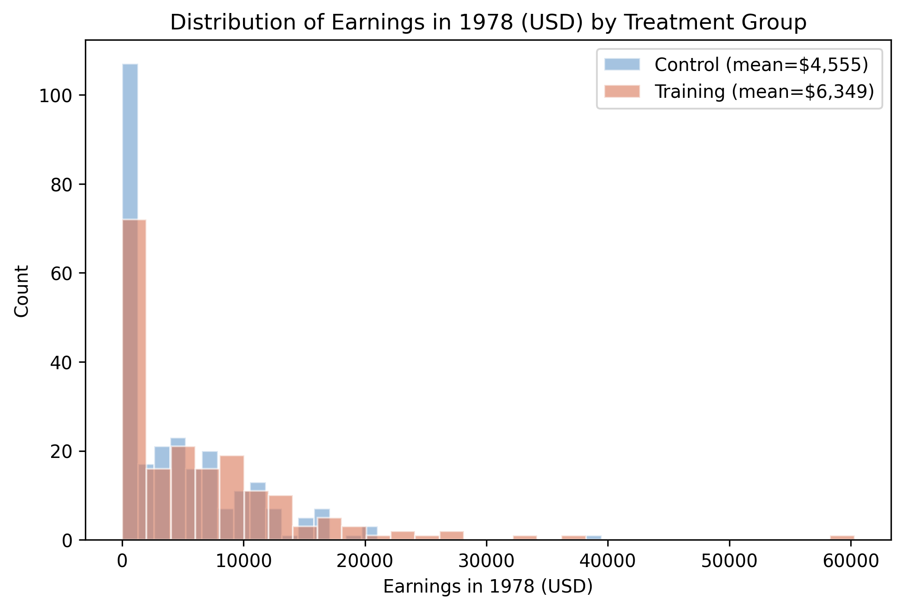
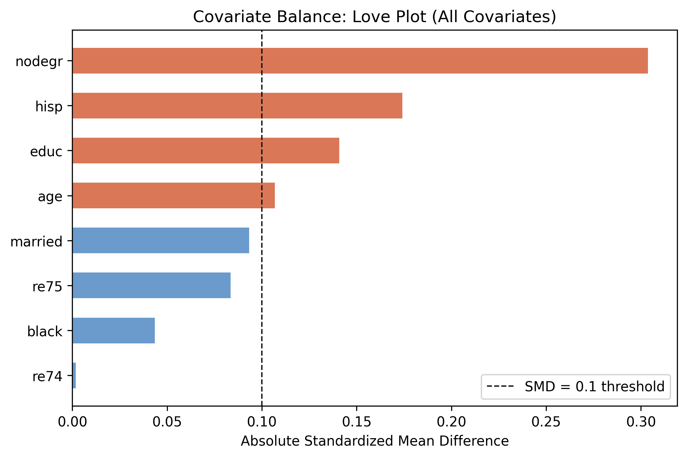
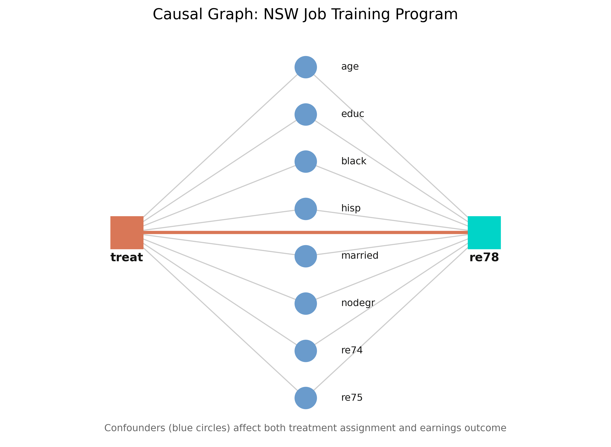

Did job training raise earnings? Model · Identify · Estimate · Refute
Nagoya University (GSID)
July 8, 2026
Act I
185 disadvantaged workers got job training; 260 did not. The trained group earned $1,794 more in 1978.
But people who enroll may differ in age, schooling, or prior earnings. Is the gap the program — or the people?

Estimated ATE across six methods. The five adjusted estimators cluster tightly; the naive difference sits highest.
Act II
\[\text{ATE} = E[Y(1) - Y(0)]\]
The expected earnings gain from moving anyone — treated or not — from no-training to training.
Four methods target the ATE directly; matching drifts toward the ATT (the effect on those actually trained) because it discards unmatched controls.
You cannot estimate before you identify, and you cannot identify before you model. That ordering is the contribution.
re78), mean $5,301, heavily right-skewedre74, re75)All eight covariates are measured before treatment, so they can only be confounders — never mediators or colliders.

Distribution of 1978 earnings by treatment group. Training mean $6,349 vs control $4,555; both right-skewed with a spike at zero.
nodegr is imbalanced by 0.31 SD
Love plot of absolute standardized mean differences. nodegr, hisp, and educ exceed the 0.1 balance threshold (orange); the rest are balanced (blue).

DoWhy’s DAG: the eight covariates point to both treatment (treat) and outcome (re78); treat points to re78.
\[\frac{d}{d[\text{treat}]}\, E[\text{re78} \mid \text{age}, \text{educ}, \text{black}, \dots, \text{re75}]\]
Conditioning on the eight covariates blocks every backdoor path, so the effect is identified — under unconfoundedness (no hidden common cause).
DoWhy checks backdoor, instrumental-variable, and front-door strategies automatically, and returns the formula — not a guess about what to “control for”.
If outcome-based and treatment-based methods agree, neither model is badly misspecified — that agreement is the robustness check.
Models \(E[Y \mid X, T]\) and reads the treatment coefficient — the gap at the same covariate values.
\[\hat{\tau}_{IPW} = \frac{1}{n}\sum_{i=1}^{n}\left[\frac{T_i Y_i}{\hat{e}(X_i)} - \frac{(1-T_i)Y_i}{1-\hat{e}(X_i)}\right]\]
A treated worker who was unlikely to be treated (\(\hat{e} = 0.1\)) gets weight 10 — they are the most informative comparison.
\[\hat{\tau}_{DR} = \frac{1}{n}\sum_{i=1}^{n}\left[\hat{\mu}_1(X_i) - \hat{\mu}_0(X_i) + \frac{T_i(Y_i - \hat{\mu}_1(X_i))}{\hat{e}(X_i)} - \frac{(1-T_i)(Y_i - \hat{\mu}_0(X_i))}{1-\hat{e}(X_i)}\right]\]
Consistent if either the outcome model or the propensity model is correct — belt and suspenders.
| Method | Estimated ATE | What it models |
|---|---|---|
| Naive (diff. in means) | $1,794 | nothing |
| Regression adjustment | $1,676 | outcome |
| IPW | $1,559 | treatment |
| Doubly robust (AIPW) | $1,620 | both |
| PS stratification | $1,617 | treatment |
| PS matching | $1,736 | treatment (→ ATT) |
The doubly robust $1,620 is the most credible single estimate — it survives misspecification of either model.
Act III
$62
Placebo ATE after randomly permuting treatment (\(p = 0.92\)) — down from $1,676
| Refutation test | New effect | p-value | Reading |
|---|---|---|---|
| Placebo treatment | $62 | 0.92 | effect vanishes |
| Random common cause | $1,676 | 0.90 | stable with noise |
| Data subset (80%) | $1,728 | 0.80 | stable across subsamples |
Surviving placebo, random-common-cause, and subset tests is evidence, not proof — refutation can falsify, never confirm.
Objection. DoWhy automated the workflow, so the estimate must be airtight.
Response. The ATE is identified only under unconfoundedness — no hidden common cause of training and earnings. The four steps make assumptions explicit and testable; they cannot manufacture identification. Here randomization makes unconfoundedness credible; in observational data it is the load-bearing risk.
$1,620
Doubly robust ATE on a control mean of $4,555 · five methods agree · refutation tests survive
{kind=link}